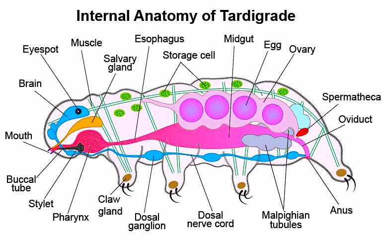

Spot the tardigrade!!

Key Facts About Tardigrades: Indestructible Ability: Through a process called cryptobiosis, they curl into a dry, lifeless ball (tun), reducing their metabolism to less than 0.01% of normal, and can survive for over 30 years in this state. Habitat: They are found worldwide wherever there is moisture, including Antarctica, deep oceans, and high in the Himalayas, typically feeding on bacteria, algae, and plant cells. Physical Appearance: They have chubby, segmented bodies with four pairs of stumpy legs, each ending in claws or sticky pads, making them look like microscopic bears. Survival Limits: They can withstand pressures of 600 megapascals—nearly 6,000 times atmospheric pressure—and temperatures ranging from roughly
Unique Biology: They possess specialized proteins (Dsup, or "damage suppressor") that protect their DNA from radiation. Evolutionary History: Tardigrades have existed for over 500 million years, surviving all five major mass extinction events on Earth. Reproduction: Some species reproduce sexually, while others (females) reproduce asexually through parthenogenesis, with eggs often hatching in about 14 days.
Tardigrades, affectionately known as "water bears" or "moss piglets," are among the most resilient and fascinating microscopic animals on Earth. First discovered in 1773, these eight-legged invertebrates typically measure between 0.1 to 1.5 millimeters in length. Despite their tiny size, they have captured the scientific world's imagination due to their plump, segmented bodies and their lumbering, bear-like gait. They belong to their own phylum, Tardigrada, and represent a unique branch of life that bridges the gap between worms and insects.
One of the most remarkable aspects of tardigrades is their global distribution. They are truly "extremophiles," found in almost every environment on the planet. You can find them in the deep sea, high atop Himalayan peaks, and within the freezing ice of Antarctica. However, their favorite spots are much closer to home. They thrive in limno-terrestrial environments—essentially damp places like moss, lichen, leaf litter, and soil—where a thin film of water allows them to remain active. Without this moisture, they cannot move, eat, or reproduce, which has led to the evolution of their famous survival tactics.
The diet of a tardigrade is surprisingly varied depending on the species. Most are microvores, using specialized needle-like teeth called stylets to pierce plant cells or algae and suck out the nutrient-rich fluids. Some species are predatory, hunting other microscopic organisms such as rotifers or even smaller tardigrades. Others function as decomposers, feeding on bacteria and organic detritus. This role in the microscopic food web makes them essential for nutrient cycling in the damp ecosystems they inhabit, acting as tiny "apex predators" of the moss world.
While individual tardigrades don't live forever in the traditional sense (their active lifespan is only about 3 to 30 months), they are effectively immortal through their ability to pause time. When environmental conditions become life-threatening, they enter a state called cryptobiosis, curling into a dehydrated ball known as a tun. In this state, they replace the water in their cells with a protective sugar called trehalose and specialized proteins. Because their metabolism stops completely, they do not age while in this state. Theoretically, a tardigrade could remain as a tun for decades—or even longer—and "wake up" to finish its life cycle whenever water returns.
What truly sets tardigrades apart is their ability to survive conditions that would be instantly fatal to almost any other life form. As a tun, they can withstand temperatures as low as −272°C (just above absolute zero) and as high as 150°C. They can endure pressures six times greater than those found in the deepest ocean trenches and survive the vacuum of outer space. In 2007, they became the first animals known to survive direct exposure to space radiation. They achieve this via a unique protein called Dsup (Damage suppressor), which creates a physical shield around their DNA to prevent it from shattering.
